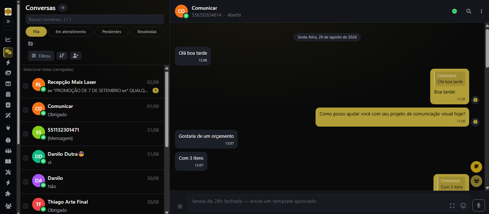
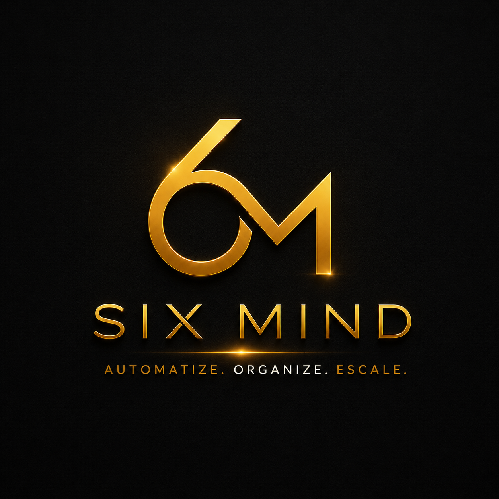
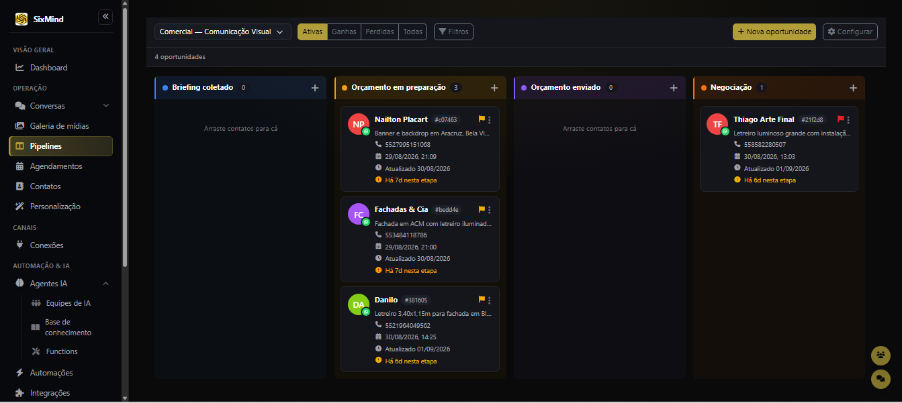
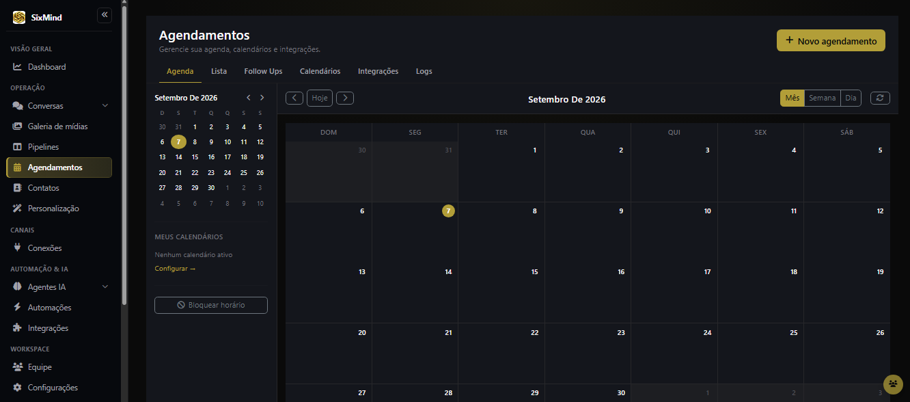
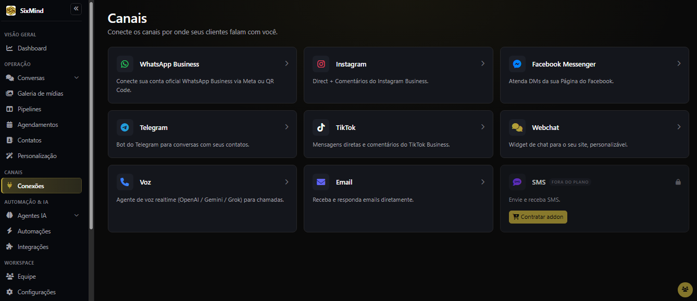
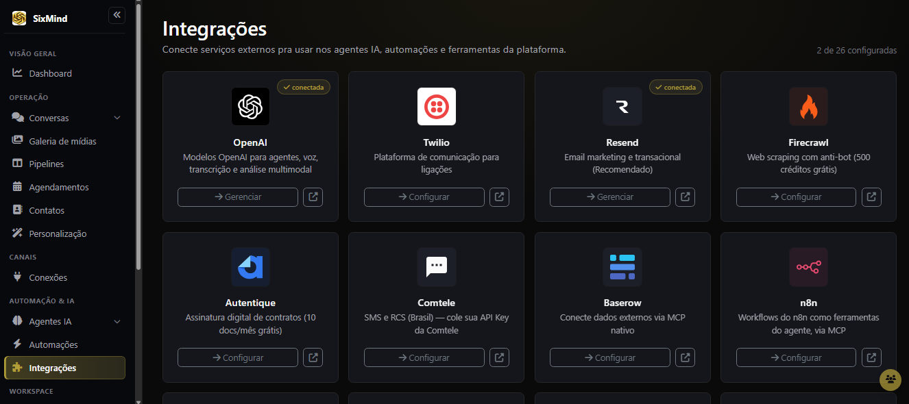
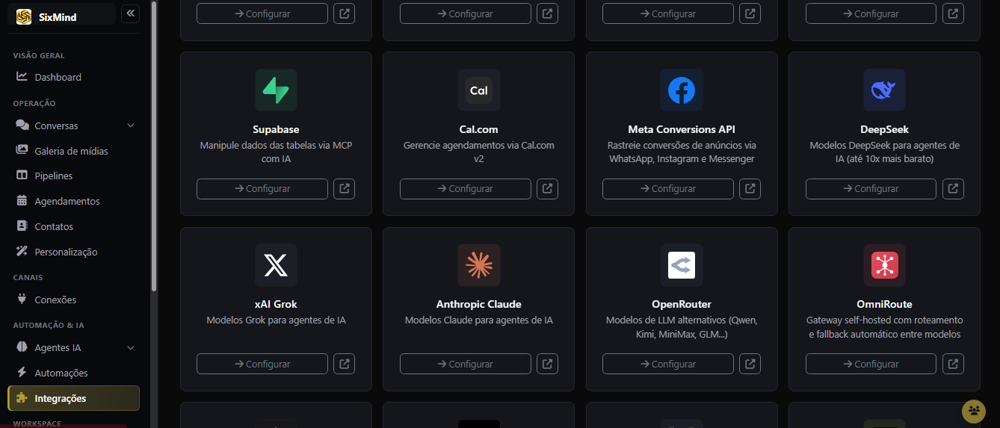
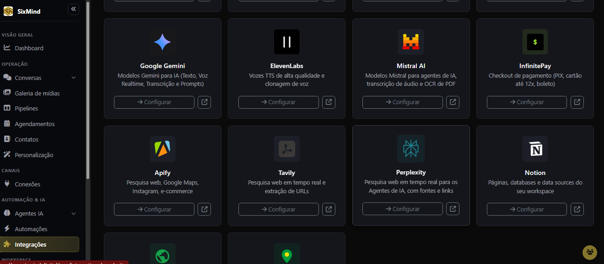
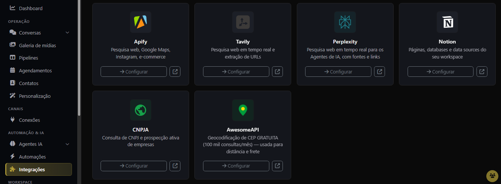

01
Atendimento centralizadoTodos os canais convergem para a mesma operação.
mensagem recebida
intenção identificada

Mapear gargaloA SixMind conecta canais, interpreta contexto, organiza dados e aciona processos. O atendimento deixa de ser uma ponta isolada e passa a mover a empresa.
A conversa muda por nicho, mas a inteligência segue o mesmo princípio: entender o contexto, organizar o dado, decidir a ação e conduzir o próximo passo.
O scroll vira a câmera. Cada ação da conversa movimenta uma etapa da operação.








Ela conecta atendimento, vendas, suporte, CRM, agenda, documentos e automações para que o dado percorra a empresa com contexto.
Não é IA por estética. É inteligência aplicada exatamente onde sua operação trava.
Mapear meu gargalo